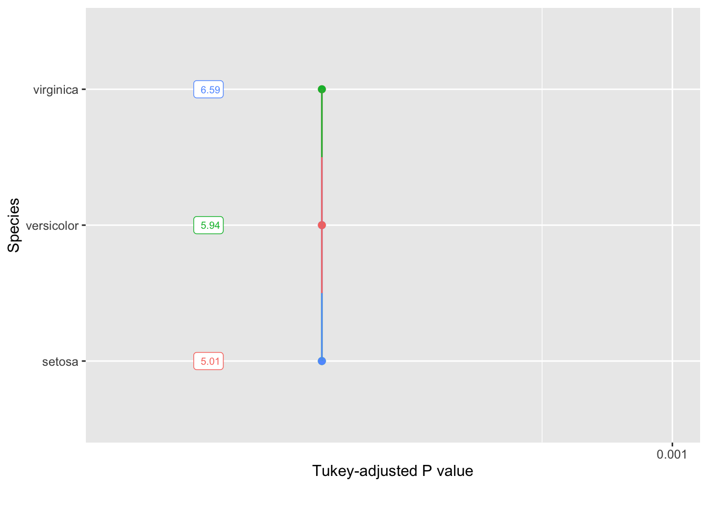

![]()
Introducción
El análisis de datos es una etapa esencial en el proceso de investigación y consiste en examinar y analizar los datos recopilados de manera detallada para extraer información y obtener conclusiones relevantes en función a los objetivos de la investigación. Para realizar el análisis de datos, se pueden utilizar diferentes herramientas y técnicas, generalmente se construyen tablas y figuras. Estos resultados son usados para tomar decisiones y formular conclusiones sobre los datos, y también pueden ser utilizados para mejorar y optimizar procesos y sistemas. El análisis de datos es importante ya que permite a los investigadores obtener una visión más profunda y detallada de los datos y tomar decisiones más informadas y precisas.
La etapa de análisis de datos puede resultar un reto difícil para un recien egresado o tesista. Esto debido a la falta de experiencia o conocimiento en el uso de herramientas y técnicas de análisis de datos. Debido a ello, queremos facilitar algunas herramientas de análisis, al mismo tiempo, se pretende que los interesados puedan entrenarse en el uso de R. Ya que esta herramienta estadística ofrece un sin fin de paquetes que nos ayudan a realizar los análisis de manera sencilla pero de mucha categoría científica.
Análisis de datos
Librerias
Base de datos
Para esta oportunidad daremos uso de la base de datos de iris. Estos datos estarán disponibles al momento de instalar R.
Sepal.Length Sepal.Width Petal.Length Petal.Width Species
1 5.1 3.5 1.4 0.2 setosa
2 4.9 3.0 1.4 0.2 setosa
3 4.7 3.2 1.3 0.2 setosa
4 4.6 3.1 1.5 0.2 setosa
5 5.0 3.6 1.4 0.2 setosa
6 5.4 3.9 1.7 0.4 setosa Species Sepal.Length Sepal.Width Petal.Length Petal.Width
1 setosa 5.1 3.5 1.4 0.2
2 setosa 4.9 3.0 1.4 0.2
3 setosa 4.7 3.2 1.3 0.2
4 setosa 4.6 3.1 1.5 0.2
5 setosa 5.0 3.6 1.4 0.2
6 setosa 5.4 3.9 1.7 0.4Análisis descriptivo
Generalmente se puede presentar en una tabla los resultados descriptivos.
| variable | mean | se | kurt | skew | min | max |
|---|---|---|---|---|---|---|
| Petal.Length | 3.76 | 0.14 | -1.40 | -0.27 | 1.0 | 6.9 |
| Petal.Width | 1.20 | 0.06 | -1.34 | -0.10 | 0.1 | 2.5 |
| Sepal.Length | 5.84 | 0.07 | -0.55 | 0.31 | 4.3 | 7.9 |
| Sepal.Width | 3.06 | 0.04 | 0.23 | 0.32 | 2.0 | 4.4 |
La otra opción podría ser una figura boxplot

Análisis de varianza
Generalmente en la mayoría de las tesis se presenta cada ANOVA para cada variable, la cual no es muy redundante en todo el documento. Además, en las revistas científicas de impacto, este tipo de tablas no es permitido si se tiene varias variables.
Analysis of Variance Table
Response: Sepal.Width
Df Sum Sq Mean Sq F value Pr(>F)
Species 2 11.345 5.6725 49.16 < 2.2e-16 ***
Residuals 147 16.962 0.1154
---
Signif. codes: 0 '***' 0.001 '**' 0.01 '*' 0.05 '.' 0.1 ' ' 1Sin embargo, se podría resumir de esta manera. En la tabla solamente se presenta aquellas variables con significancia estadística.
| FV | DF | Sepal.Length | Sepal.Width | Petal.Length | Petal.Width |
|---|---|---|---|---|---|
| Species | 2 | 31.61 ** | 5.67 ** | 218.55 ** | 40.21 ** |
| Residuals | 147 | 0.27 | 0.12 | 0.19 | 0.04 |
Una vez identificada las diferencias estadisticas se procede a realizar pruebas de promedio para seleccionar genotipos sobresalientes.
library(emmeans)
anova1 = aov(Sepal.Length ~ Species, data = data)
anova2 = aov(Sepal.Width ~ Species, data = data)
anova3 = aov(Petal.Length ~ Species, data = data)
anova4 = aov(Petal.Width ~ Species, data = data)
#comparacion de medias
medias1 = emmeans(anova1, ~Species)
medias2 = emmeans(anova2, ~Species)
medias3 = emmeans(anova3, ~Species)
medias4 = emmeans(anova4, ~Species)
pwpm(medias1) setosa versicolor virginica
setosa [5.01] <.0001 <.0001
versicolor -0.930 [5.94] <.0001
virginica -1.582 -0.652 [6.59]
Row and column labels: Species
Upper triangle: P values adjust = "tukey"
Diagonal: [Estimates] (emmean)
Lower triangle: Comparisons (estimate) earlier vs. laterpwpp(medias1)
Hay otra manera de representar comparaciones graficamente
# set a theme plot
my_theme = theme_bw()+
theme(legend.title = element_blank(),
axis.title = element_text(color = "black"),
axis.text = element_text(colour = "black"),
panel.grid.minor = element_blank())p1 = plot(medias1,
CIs = FALSE,
comparisons = TRUE,
xlab = "Mean",
ylab = "Treatments") +
geom_vline(xintercept = mean(data$Sepal.Length)) +
my_theme
p2 = plot(medias2,
CIs = FALSE,
comparisons = TRUE,
xlab = "Mean",
ylab = "Treatments") +
geom_vline(xintercept = mean(data$Sepal.Width)) +
my_theme
p3 = plot(medias3,
CIs = FALSE,
comparisons = TRUE,
xlab = "Mean",
ylab = "Treatments") +
geom_vline(xintercept = mean(data$Petal.Length)) +
my_theme
p4 = plot(medias4,
CIs = FALSE,
comparisons = TRUE,
xlab = "Mean",
ylab = "Treatments") +
geom_vline(xintercept = mean(data$Sepal.Width)) +
my_theme
arrange_ggplot((p1 + p2 + p3 + p4),
nrow = 2,
heights = c(0.6, 1),
tag_levels = "a",
guides = "collect")
# Utilizando paquete AgroR
library(AgroR)
Attaching package: 'AgroR'The following object is masked from 'package:dplyr':
descwith(data,
DIC(Species, Sepal.Length))
-----------------------------------------------------------------
Normality of errors
-----------------------------------------------------------------
Method Statistic p.value
Shapiro-Wilk normality test(W) 0.9878974 0.2188639As the calculated p-value is greater than the 5% significance level, hypothesis H0 is not rejected. Therefore, errors can be considered normal
-----------------------------------------------------------------
Homogeneity of Variances
-----------------------------------------------------------------
Method Statistic p.value
Bartlett test(Bartlett's K-squared) 16.0057 0.0003345076As the calculated p-value is less than the 5% significance level, H0 is rejected.Therefore, the variances are not homogeneous
-----------------------------------------------------------------
Independence from errors
-----------------------------------------------------------------
Method Statistic p.value
Durbin-Watson test(DW) 2.043002 0.5401261As the calculated p-value is greater than the 5% significance level, hypothesis H0 is not rejected. Therefore, errors can be considered independent
-----------------------------------------------------------------
Additional Information
-----------------------------------------------------------------
CV (%) = 8.81
MStrat/MST = 0.99
Mean = 5.8433
Median = 5.8
Possible outliers = 107
-----------------------------------------------------------------
Analysis of Variance
-----------------------------------------------------------------
Df Sum Sq Mean.Sq F value Pr(F)
trat 2 63.21213 31.6060667 119.2645 1.669669e-31
Residuals 147 38.95620 0.2650082 As the calculated p-value, it is less than the 5% significance level.The hypothesis H0 of equality of means is rejected. Therefore, at least two treatments differ
-----------------------------------------------------------------
Multiple Comparison Test: Tukey HSD
-----------------------------------------------------------------
resp groups
virginica 6.588 a
versicolor 5.936 b
setosa 5.006 c
Your analysis is not valid, suggests using a non-parametric test and try to transform the data

Citation
@online{santos2023,
author = {Franklin Santos},
title = {Análisis de Datos Experimentales Agrícolas},
date = {2023-01-01},
url = {https://www.franklinsantosm.com/posts/agridata},
langid = {en}
}